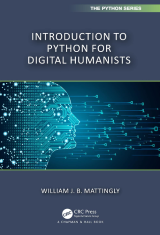
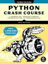
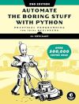
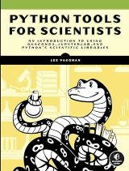

… Python#
Python is a free general purpose programming language used in several academic fields and throughout industry. Python offers several packages or libraries that support data gathering, data cleaning, and data visualization, such as matplotlib, plotly, pandas, BeautifulSoup, and more.
Examples#
Free Resources#

Introduction to Cultural Analytics & Python
by Melanie Walsh, 2024.
Winner of “Best DH Training Material” 2021.

Introduction to Python for Digital Humanists
by William J.B. Mattingly
Boca Raton : CRC Press, 2023.
Melanie Walsh’s Introduction to Cultural Analytics & Python and William J.B. Mattingly’s Introduction to Python for Digital Humanists both introduce Python in plain English to researchers interested in using Python for analyzing texts. These freely available open access books include coveted Jupyter notebooks you can download or clone allowing you to practice the introduced concepts using either the demo or your own data.
Recommended Titles#

Python crash course : a hands-on, project-based introduction to programming, 3rd edition
by Eric Matthes
San Francisco, CA : No Starch Press, 2023.
Get up and running in a weekend with Eric Matthes’ Python crash course : a hands-on, project-based introduction to programming, 3rd edition. Using approachable language paired with coding examples, this book introduces Python variables, data types, methods, functions, and more while pushing you to try each introduced concept yourself.

Automate the boring stuff with Python : practical programming for total beginners, 2nd edition
by Al Sweigart
San Francisco, CA : No Starch Press, 2020.
Learn Python basics and then master using Python to scrape websites, match text patterns using regular expressions, read documents, work with .csv and .json data, schedule tasks, manipulate images, and more with Al Sweigart’s Automate the boring stuff with Python : practical programming for total beginners, 2nd edition Each chapter includes practice questions, helping you to apply what you’ve learned and become a more confident programmer.

Python tools for scientists : an introduction to using Anaconda, Jupyterlab, and Python’s scientific libraries
by Lee Vaughan
San Francisco : No Starch Press, 2023.
Recommended Packages | Libraries#
Standard Library Modules#
os
Tell Python where to find and save filesglob
Find file/pathnames with a directory wildcard search. Glob provides a means to iterate through a file directory’s content.re
Known as wildcards on steroids, Regular Expressions match patterns in text, allowing you to search for and extract terms from a document.urllib.request
Library for opening urls
Essential Library Modules#
numpy
Essential package for scientific computing. A standard for working with numerical data.pandas
A common Python library used to open and read datasets, organize, clean and transform data, and prepare data for analysis and visualization.matplotlib
A “comprehensive library for creating static, animated, and interactive visualizations in Python.”
Other Library Modules#
seaborn
A library based on matplotlib and used to format and create nmore attractive visualizations.